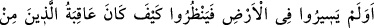
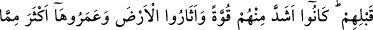
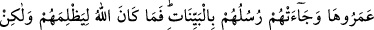
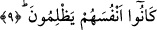
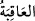
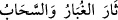
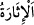
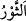
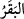
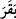

“İnsanların birçoğu,” âhiretten gâfil olmalarının ve kendilerini âhireti bilip tanımaya
irşâd edecek tefekkürden yüz çevirmelerinin yanı sıra “Rablerine kavuşmayı” yâni
yeniden diriltilmek sûretiyle O’nun hesabıyla ve yapılanların karşılığını vermesiyle
karşı karşıya geleceklerini “gerçekten inkâr etmektedirler.” Yâni reddederler;
dünyânın ebedî olduğunu ve belirlenen sürenin gelmesi ile âhiretin meydana
gelmeyeceğini zannederler.
9. Onlar, yeryüzünde gezip de kendilerinden öncekilerin âkıbetlerinin nice
olduğuna bakmadılar mı? Ki onlar, kendilerinden daha güçlü idiler; yeryüzünü
kazıp alt-üst etmişler, onu bunların imar ettiklerinden daha çok imar etmişlerdi.
Peygamberleri, onlara da nice açık deliller getirmişlerdi. Zaten Allah onlara
zulmedecek değildi; fakat onlar kendi kendilerine zulmetmekteydiler.
“Onlar,” Mekke halkı “yeryüzünde gezip de kendilerinden öncekilerin” Âd ve
Semûd gibi helâk edilmiş milletlerin “âkıbetlerinin nice olduğuna bakmadılar mı?”
yâni yerlerinde oturdular, gezip dolaşmadılar ve bakmadılar mı? Yâni yeryüzünün
çeşitli yerlerine yaptıkları ticâret seferleri sırasında elbette gezdiler ve bunları
gördüler.
“
” kelimesi mutlak olarak kullanıldığında “Âkıbet/sonuç müttakîlerindir.” (el-
A‘râf, 7/128) âyetinde olduğu gibi sevab anlamında, izâfetle kullanıldığında ise (tefsîri
yapılan) bu âyette olduğu gibi cezâ anlamında kullanılır. İşin sonu, serencâm demektir.
Sonra Allah bu milletlerin hallerinin başını ve sonunu açıklayarak şöyle buyurdu: “Ki
onlar, kendilerinden daha güçlü idiler;” Yâni, onlar Mekke halkından daha güçlü
olduklarından dünyâ hayatından faydalanma konusunda Mekke halkından daha muktedir
idiler.
“Yeryüzünü kazıp alt-üst etmişler,” Toz ve bulut yayılarak dağıldı anlamında “
” denir. “
” tozu yükselene kadar bir şeyi hareket ettirip silkelemektir.
Tâcü’l-masâdır’da belirtildiği üzere ise tozu toprağı kaldırmak, yeryüzünü karıştırmak
ve rüzgârın bulut getirmesi, demektir. “
” kendisiyle toprak sürülen sığırın adıdır. “
” ise ‘yardı’ anlamındaki “ ” fiilinden türemiştir. Çünkü sığır denilen hayvan
toprağı işlemek sûretiyle yarar. Muhammed b. Hüseyin b. Ali’ye “el-Bâkır” denilmesi